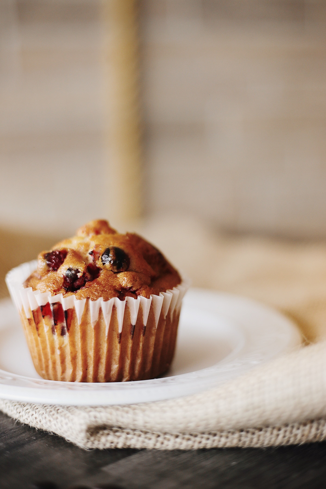

Dulces momentos, dulces recuerdos...
En nuestra confitería, ofrecemos una experiencia única. Desde nuestros postres clásicos hasta nuestras creaciones más innovadoras, cada bocado está lleno de sabor y calidad. Utilizamos solo los mejores ingredientes para asegurarnos de que cada visita a nuestra confitería sea una experiencia memorable. ¡Veni a probar nuestros dulces y dejate tentar!